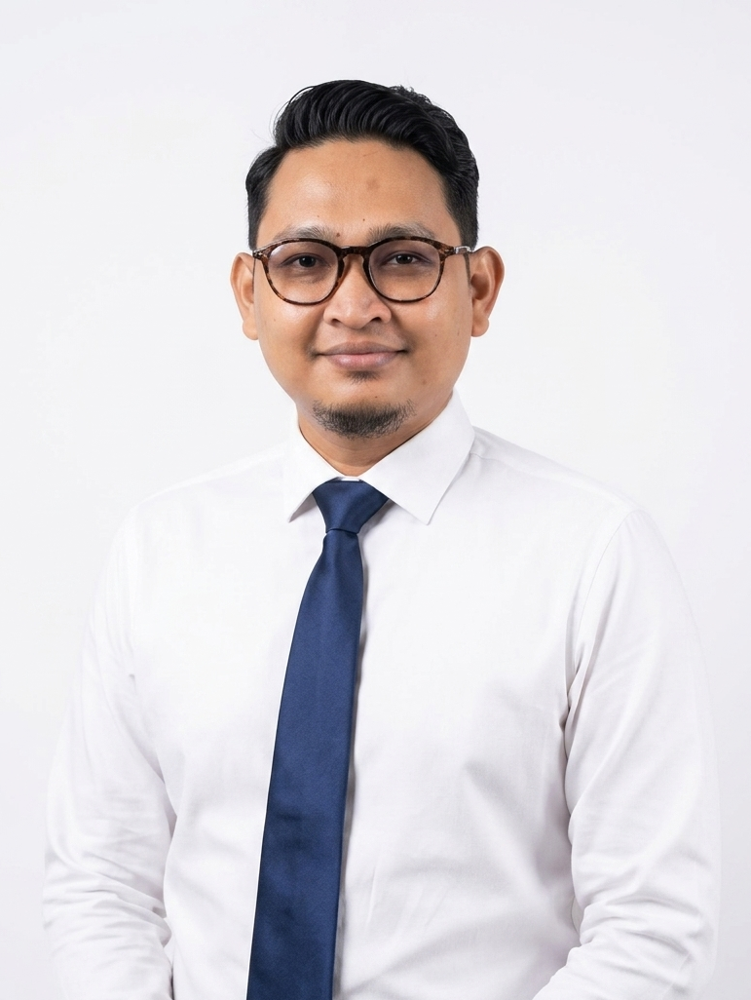

Memimpin proyek IT di PT. Kita Indonesia Plus dengan mengelola seluruh fase *Software Development Life Cycle* (SDLC). Terbukti menyampaikan 98% solusi sukses tepat waktu dan sesuai anggaran melalui manajemen risiko yang terukur.

98%
On-Time & Budget Delivery
End-to-End
SDLC Execution
Cross-Functional
Team Leadership
PT. Kita Indonesia Plus • Jakarta, Indonesia
SDLC Planning, Agile/Scrum, Task Prioritization, Resource Allocation, Roadmap Development.
Systems Analysis, Risk Management & Mitigation, Data Privacy Compliance, Scope Control (CR).
API Integration, Technical Issue Dashboard Management, Mock Server Testing, Quality Assurance.
Terbuka untuk kolaborasi proyek IT, konsultasi sistem, dan peluang profesional lainnya.